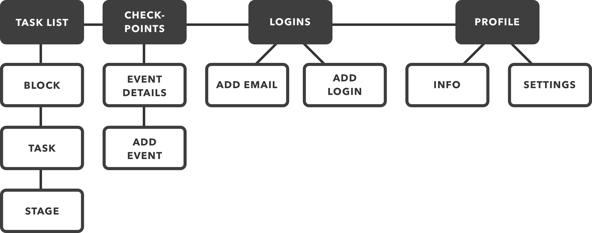

Ebay partnered with Oregon Gear Up as part of Ebay’s ongoing support for nonprofits. Oregon Gear Up is an Oregon based nonprofit which aims to help prepare low-income students for postsecondary educational programs. They attend different schools across the state to help encourage and facilitate college readiness. They work with school staff to "design program activities that meet the needs of their community grounded in (their) research-based model.” Additionally, their website catalogs a list of steps to plan college applications, financial aid, and how to attend once accepted. I worked with Oregon Gear Up as part of Ebay's team to design a mobile app which would aid their organization’s cause.
Low-income students in Oregon lack the tools and support to properly navigate the college admission and financial aid processes.
Design a solution which will elucidate the application processand which guides users through its many facets, encouraging them to stay on track.
To better understand these student’s needs, I needed to understand their behaviors. The team decided to focus on a narrow target audience, all members of the same demographic. All target users are Low-income high school seniors, who are either curious about college or who are already planning to apply.
The primary components of the app are: the Checkpoints, Upcoming Dates, Logins, and Profile. The Checkpoints informs the user which steps they must take to prepare for college, and guides them through the completion of tasks in a helpful order. Tasks are nested in blocks and users can only start tasks in their current block. Tasks also have stages which step the user the task's completion. Upcoming Dates informs the user of upcoming event's, tasks which are time-sensitive. In Upcoming Dates, event details are displayed with the option to add an event. Logins helps the user store and retreive their login information for different applications and services as well as manage their email for the college applicaiton process. Profile allows users to review and edit information added in the Checkpoints as well as adjust settings for the app itself.
The Checkpoints are broken down into subcomponents which help guide the user through each task's completion. The content hierarchy of blocks, tasks, and stages allows the user to multitask while still providing helpful linear structure. Blocks contain a small set number of tasks. The user can only start tasks within their current block and can progress through these tasks concurrently. Only once all tasks in the current block are completed the user unlocks the next block of tasks. Each task has a small number of stages which the user completes one at a time and in a set order. The user may exit a task and the completed stages are saved. Once all the stages for a task are complete that task is complete as well. The screen shown is an initial visual mockup. The colors inform the user of the tasks correspondance with one of three Oregon Gear Up task categories: "apply", "pay", "go". The bar to the right of the task's title displays the progress made on each task. The bottom navigation bar's elements correspond with the top level elements of the app's IA.
When the user selects a task from the checkpoints page, they navigate to its task page. Here, the use of a modal page allows the user to focus on the task at hand, working through each of its stages. The stages are represented as cards. By completing one stage, the user unlocks the next. The user can always scroll back through prior stages and edit the information saved there. The user's progress and placement within the task is tracked by the progress bar. Exiting the task saves the state of the task and returns the user to the Checkpoints page.
This project is ongoing. More information about Oregon Gear Up can be found on